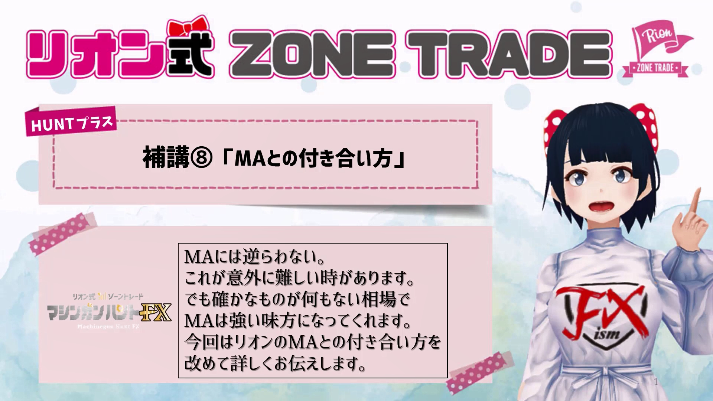

👈👈ギガ速FX_index
👈👈ギガ速FX_index- ページ内のINDEX_test

★★★TEST TEXT★★★★（★TEST）m3008_＋02

MA(이동 평균선)는 중요한 지표로, 트레이딩에서 신뢰할 수 있는 지지 및 저항선을 제공합니다.
1시간 MA와 4시간 MA를 기준으로 트렌드를 판단합니다.
4시간 MA를 돌파하지 못하면 매도 신호로 판단합니다.
특히, 1시간 MA가 하락세를 보이며 20MA를 돌파할 때 주의가 필요합니다.
4시간 MA를 돌파하면서 상승세로 돌아설 때, 1시간 MA가 상승 추세를 유지할 때 매수합니다.
1분 및 5분 차트에서 200MA를 기준으로 매매 판단을 내립니다.
200MA를 기준으로 가격이 위로 돌파하거나 하락할 때 신중하게 대응합니다.
모든 매매 후의 가격 변동 및 MA의 위치를 지속적으로 확인하여 잘못된 진입을 방지합니다.
1시간 MA와 4시간 MA의 방향성을 확인하여, 매도 혹은 매수 방향을 결정합니다.
1분 및 5분 차트에서의 노이즈를 줄이기 위해 200MA를 기준으로 진입 타이밍을 잡습니다.
손절라인을 명확히 설정하고, 트레이드 중 불필요한 감정적 결정을 피합니다.
트레이딩 목표를 분명히 하고, 과도한 손실을 방지합니다.
이 비디오에서는 MA를 효과적으로 활용하여 매매 결정을 내리는 방법을 자세히 설명하고 있습니다. 이를 통해 실전 트레이딩에서의 성공 가능성을 높일 수 있습니다.